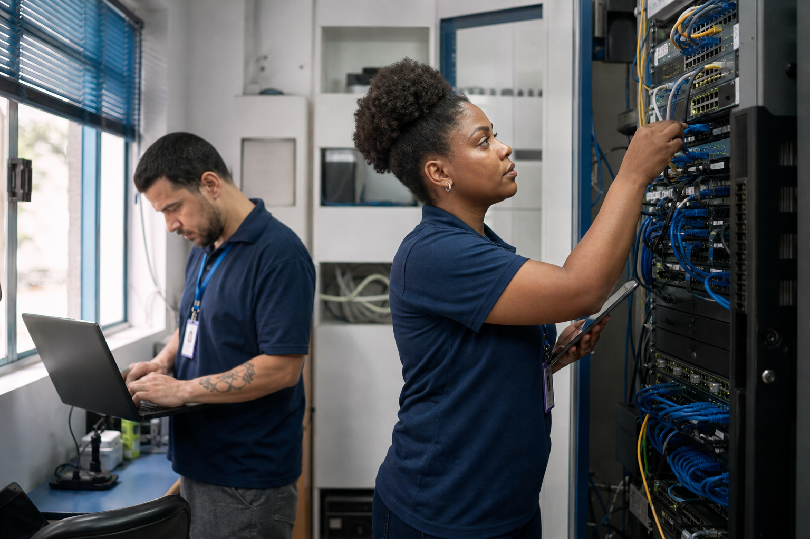

TI para Empresas
Suporte aos usuários, computadores, redes, servidores e sistemas. Prevenimos problemas e ajudamos sua equipe quando ela mais precisa.
Quero organizar minha TI →Tecnologia simples. Atendimento de verdade.
A UPTECH cuida da tecnologia do seu negócio com suporte próximo, soluções seguras e linguagem que todo mundo entende.
Soluções para empresas
Da rotina do escritório a novos projetos digitais, reunimos estratégia e execução em um único parceiro.
Suporte aos usuários, computadores, redes, servidores e sistemas. Prevenimos problemas e ajudamos sua equipe quando ela mais precisa.
Quero organizar minha TI →Automatizamos tarefas repetitivas, atendimento e fluxos internos para sua equipe ganhar tempo sem perder o toque humano.
Quero ganhar produtividade →Sistemas e integrações sob medida, pensados para resolver necessidades reais do seu negócio.
Tenho uma ideia →Proteção de dados, cópias de segurança, controle de acesso e orientação para reduzir riscos.
Quero proteger meus dados →Sites rápidos, acessíveis e fáceis de usar, com foco em apresentar sua empresa e gerar oportunidades.
Quero um novo site →
Catálogo completo
Você não precisa contratar um pacote genérico. Combinamos os serviços necessários para a realidade da sua empresa, escola, instituição ou projeto.
Nosso jeito de trabalhar
Não empurramos ferramentas. Cada solução começa com uma conversa clara sobre sua rotina, seus desafios e o resultado esperado.
Passo a passo
Entendemos o momento, as dificuldades e prioridades.
Avaliamos riscos, oportunidades e o melhor caminho.
Apresentamos escopo, prazo e investimento sem surpresas.
Colocamos a solução em prática e seguimos por perto.
Resultados reais
Exemplos de frentes em que a UPTECH já apoia operações e usuários.
Suporte e estrutura tecnológica para manter pessoas conectadas e produtivas.
Atendimento contínuo e próximoRotinas de backup e segurança para reduzir riscos e acelerar a recuperação.
Prevenção antes da urgênciaAutomação de processos repetitivos para liberar tempo da equipe.
Mais foco no que gera valorVamos conversar?
Conte para a UPTECH. A primeira conversa é direta, sem compromisso e sem linguagem complicada.